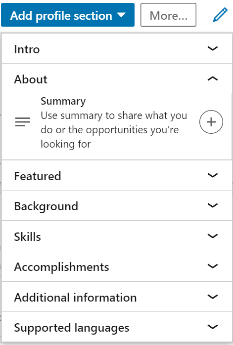
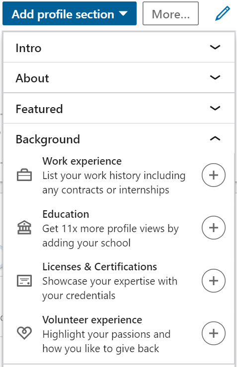
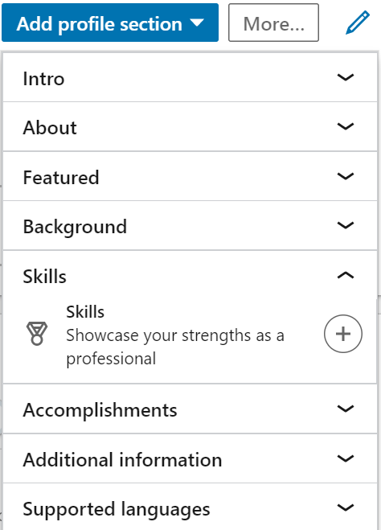
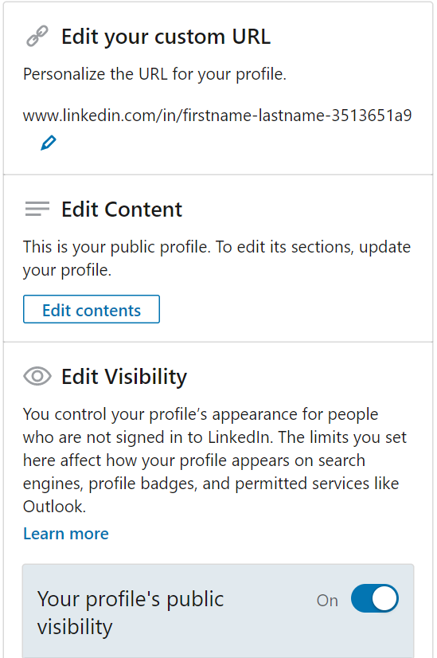

Many people wonder as to “What is LinkedIn?”, “What is the use of LinkedIn?”, “How to use LinkedIn?”, etc. Here you get all your queries cleared.
LinkedIn is a business and employment-oriented online service launched in 2003 and have over more than 575+ million users all over the Globe. So, in simple words, LinkedIn is used for business and can be used for seeking job.
It’s basically a digital professional profile of yours. It’s a digital resume but not a resume.
Through LinkedIn we can make great professional connections, can add our achievements and glories, can showcase our talents and works and even can seek for job opportunities.
Now let’s come to “What are the things you can do to make a professional LinkedIn profile?” or “How to make a Rocking profile?”, so that you get more visitors and connections. Let’s go sequentially:
- Google www.linkedin.com and make an id there.
- At Home page, tap on “Me” in the Menu bar and then go to “View Profile”.

- Just above your name, you will find an option for your photo. Click on it and a photo. Try to upload a professional photograph. As this is a professional networking site, so a professional photograph adds a plus point to your profile.
Even studies say that adding a professional profile picture, bring 21x viewers to your profile.

- Click on the pencil icon at the right. A pop-up window will open. There you can add a background image by clicking on the top right corner camera. Try to add a background image which suites your personality or profession. It’s
recommended there to use a picture of 1584 X 396px. On that window you can add a headline which defines you and your present work/profession. You can further add your country, location and industry down. Then save it.

- You can add your further details like an introduction, summary about you, profession, education background, experiences, certificates, skills, projects and a lot more. You can add these by clicking on “Add Profile Section”. Let’s
talk about adding a summary or kind of your introduction first. Adding a summary about yourself gives a brief to your viewers about your personality. In About option, tap on the plus(+) sign to add a summary.
 - Now add your work experience to give your viewers a knowledge about your professional background, education which gives 11x views on profile, licenses & certificates which shows your knowledge and volunteer experiences if you
have any. Adding these sections gives a brief about your knowledge and past works & experiences to your viewers.
 - Add your skills to your profile, to showcase your knowledge. Adding skills helps viewers to get notice your skills at one go. You can add up to 50 skills on your LinkedIn profile. Add all your skills be it hard or soft skills.
 - Next in “Accomplishments” section you can your publications, patents, courses, projects, honor & awards, test scores, languages and involvements in different organizations. All this information adds to your profile and helps
viewers to understand your personality and dedications easily.
All these were to make your profile to give a professional look to your viewers and to help them to understand your personality, works, experiences and knowledge.
Now let’s talk on “How to use LinkedIn?” and other features of LinkedIn which you should know.
- Networking is the main work on LinkedIn. You can add your friends, colleagues, professionals, experts and lot more people. Just on the search bar, search for that person. After finding that profile, tap on the option “Connect”.
While sending your connection request, you will get an option to write a message. Always write a professional message while sending one a connection request, as to tell him/her that why you want to connect with that person.
Keep it short and professional. This will help the person to identify you and to accept your request. Then tap send invitation.

- Search for “Jobs”. On the menu tab, you get an option of “Jobs”. There you can find a job suitable to your skills and location.
- Just sending connection request is not the thing to stop. You should further increase your interaction with that person. You get a “Messaging” section in the menu bar for the same. You can talk to any connection there to increase
your interaction with that person. Always be professional while chatting. Don’t spam.
- You can join groups on LinkedIn which suites your profession or skills. Just search that stuff on the search bar, then in the “More” option, apply the filter to “Groups”. Choose the best group for you and then send a request as
“Request to join” option. If the group find your profile suitable for that group, they will add you.
- Few more important features that you should know about LinkedIn. You can ask or give, any person in your connections for a recommendation. It will help your viewers to know your hard work and experiences. Recommendations always
add a plus point to your profile. For this, go to that person’s profile. In “More” option, you will find “Request a Recommendation” option. It will ask your relationship with that person and your present position. Add
those and the work is done.

- You can endorse a person’s skills in his/her profile. This is a type of surety you give to the world for that person’s skill, that this person is really good at this skill. This will surely help the person to make great connections
and even to land into any job.
- The default URL which you get from LinkedIn, is something like "www.linkedin.com/in/firstname-lastname-3513651a9". It has a lot of useless numbers in it. You can edit and personalize your URL. Go to the option "Edit public profile
& URL" at the top right corner in your profile.

There at the top right corner, you can personalize your URL by clicking on the pencil in "Edit your custom URL" section. You can also edit the your profile visibility in your public profile. "Public profile" is something, which is shown when anyone is opening your profile from your profile URL, but isn't signed in to LinkedIn. You can personalize such page as to what you want to showcase such viewers.

So, now you have full knowledge as to “What is LinkedIn?”, “What LinkedIn is used for?”, “How to use LinkedIn?” and a lot more. Go ahead, post your thoughts and stuffs, build connections and shine high in sky.